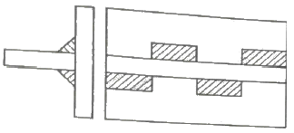
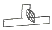
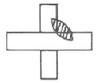
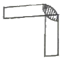

용접산업기사 (2018-03-04 기출문제)
1과목: 용접야금 및 용접설비제도
1. 저온균열의 발생에 관한 내용으로 옳은 것은?
- 용융금속의 응고 직후에 일어난다.
- 오스테나이트계 스테인리스강에서 자주 발생한다.
- 용접금속이 약 300℃ 이하로 냉각되었을 때 발생한다.
- 입계가 충분히 고상화되지 못한 상태에서 응력이 작용하여 발생한다.
(정답률: 72%)

2. 일반적인 금속의 결정격자 중 전연성이 가장 큰 것은?
- 면심입방격자
- 체심입방격자
- 조밀육방격자
- 체심정방격자
(정답률: 65%)
3. 탄소와 질소를 동시에 강의 표면에 침투, 확산시켜 강의 표면을 경화시키는 방법은?
- 침투법
- 질화법
- 침탄 질화법
- 고주파 담금질
(정답률: 70%)
4. 킬드강(killed steel)을 제조할 때 탈산 작용을 하는 가장 적합한 원소는?
- P
- S
- Ar
- Si
(정답률: 63%)
5. 연강을 0℃ 이하에서 용접할 경우 예열하는 요령으로 옳은 것은?
- 연강은 예열이 필요 없다.
- 용접 이음부를 약 500~600℃
- 용접 이음부의 홈 안을 700℃ 전후로 예열한다.
- 용접 이음의 양쪽 폭 100mm 정도를 40~75℃로 예열한다.
(정답률: 76%)
6. 스테인리스강 중 내식성, 내열성, 용접성이 우수하며 대표적인 조성이 18Cr - 8Ni 인 계통은?
- 페라이트계
- 소르바이트계
- 마텐자이트계
- 오스테나이트계
(정답률: 85%)
7. 다음 중 용착금속의 샤르피 흡수 에너지를 가장 높게 할 수 있는 용접봉은?
- E4303
- E4311
- E4316
- E4327
(정답률: 73%)
8. Fe - C 합금에서 6.67%C를 함유하는 탄화철의 조직은?
- 페라이트
- 시멘타이트
- 오스테나이트
- 트루스타이트
(정답률: 68%)
9. 일반적인 피복 아크 용접봉의 편심률은 몇 %이내인가?
- 3%
- 5%
- 10%
- 20%
(정답률: 78%)
10. 슬래그를 구성하는 산화물 중 산성 산화물에 속하는 것은?
- FeO
- SiO2
- TiO2
- Fe2O3
(정답률: 53%)
11. 다음 용접자세 중 수직 자세를 나타내는 것은?
- F
- O
- V
- H
(정답률: 89%)
12. 다음 중 도면의 크기에 대한 설명으로 틀린 것은?
- A0의 넓이는 약 1m2이다.
- A4의 크기는 210mm x 297mm이다.
- 제도 용지의 세로와 가로 비는 1 : √2이다.
- 복사한 도면이나 큰 도면을 접을 때는 A3의 크기로 접는 것을 원칙으로 한다.
(정답률: 84%)
13. 다음 중 얇은 부분의 단면도를 도시할 때 사용하는 선은?
- 가는 실선
- 가는 파선
- 가는 1점 쇄선
- 아주 굵은 실선
(정답률: 37%)
14. 다음 중 치수 보조기호의 의미가 틀린 것은?
- C : 45°모떼기
- SR : 구의 반지름
- t : 판의 두께
- ( ) : 이론적으로 정확한 치수
(정답률: 81%)
15. 일반적인 판금전개도를 그릴 때 전개 방법이 아닌 것은?
- 사각형 전개법
- 평행선 전개법
- 방사선 전개법
- 삼각형 전개법
(정답률: 59%)
16. 상, 하 또는 좌, 우 대칭인 물체의 중심선을 기준으로 내부와 외부 모양을 동시에 표시 하는 단면도법은?
- 온 단면도
- 한쪽 단면도
- 계단 단면도
- 부분 단면도
(정답률: 50%)
17. 다음은 KS 기계제도의 모양에 따른 선의 종류를 설명한 것이다. 틀린 것은?
- 실선 : 연속적으로 이어진 선
- 파선 : 짧은 선을 불규칙한 간격으로 나열한 선
- 일점쇄선 : 길고 짧은 두 종류의 선을 번갈아 나열한 선
- 이점쇄선 : 긴 선과 두 개의 짧은 선을 번갈아 나열한 선
(정답률: 80%)
18. 제도에서 사용되는 선의 종류 중 가는 2점 쇄선의 용도를 바르게 나타낸 것은?
- 대상물의 실제 보이는 부분을 나타낸다.
- 도형의 중심선을 간략하게 나타내는데 쓰인다.
- 가공 전 또는 가공 후의 모양을 표시하는데 쓰인다.
- 특수한 가공을 하는 부분 등 특별한 요구사항을 적용할 수 있는 범위를 표시하는데 쓰인다.
(정답률: 49%)
19. 도면에서 2종류 이상의 선이 같은 장소에서 중복될 경우 도면에 우선적으로 그어야 하는 선은?
- 외형선
- 중심선
- 숨은선
- 무게 중심선
(정답률: 80%)
20. 다음 중 가는 실선을 사용하지 않는 선은?
- 치수선
- 지시선
- 숨은선
- 치수 보조선
(정답률: 80%)
2과목: 용접구조설계
21. 각 변형의 방지대책에 관한 설명 중 틀린 것은?
- 구속지그를 활용한다.
- 용접속도가 빠른 용접법을 이용한다.
- 개선 각도는 작업에 지장이 없는 한도 내에서 작게 하는 것이 좋다.
- 판 두께와 개선형상이 일정할 때 용접봉 지름이 작은 것을 이용하여 패스의 수를 늘린다.
(정답률: 72%)
22. 용접 시점이나 종점 부분의 결함을 줄이는 설계 방법으로 가장 거리가 먼 것은?
- 주부재와 2차 부재를 전둘레 용접하는 경우 틈새를 10mm정도로 둔다.
- 용접부의 끝단에 돌출부를 주어 용접한 후에 엔드 탭(end tab)은 제거한다.
- 양면에서 용접 후 다리길이 끝에 응력이 집중되지 않게 라운딩을 준다.
- 엔드 탭(end tab)을 붙이지 않고 한 면에 V형 홈으로 만들어 용접 후 라운딩한다.
(정답률: 39%)
23. 용접부 윗면이나 아래면이 모재의 표면보다 낮게 되는 것으로 용접사가 충분히 용착금 속을 채우지 못하였을 때 생기는 결함은?
- 오버랩
- 언더필
- 스패터
- 아크 스트라이크
(정답률: 82%)
24. 용접구조물에서 파괴 및 손상의 원인으로 가장 거리가 먼 것은?
- 재료 불량
- 포장 불량
- 설계 불량
- 시공 불량
(정답률: 85%)
25. T 이음 등에서 강의 내부에 강판 표면과 평행하게 층상으로 발생되는 균열로 주요 원인이 모재의 비금속 개재물인 것은?
- 토 균열
- 재열 균열
- 루트 균열
- 라멜라테어
(정답률: 65%)
26. 아래 그림과 같은 필릿 용접부의 종류는?

- 연속 필릿용접
- 단속 병렬 필릿용접
- 연속 병렬 필릿용접
- 단속 지그재그 필릿용접
(정답률: 84%)
27. 응력 제거 풀림의 효과에 대한 설명으로 틀린 것은?
- 치수틀림의 방지
- 충격저항의 감소
- 크리프 강도의 향상
- 열영향부의 템퍼링 연화
(정답률: 57%)
28. 다음 중 용접용 공구가 아닌 것은?
- 앞치마
- 치핑해머
- 용접집게
- 와이어브러시
(정답률: 83%)
29. 판두께 8mm를 아래보기 자세로 15m, 판두께 15mm를 수직 자세로 8m 맞대기 용접 하였다. 이 때 환산 용접 길이는 얼마인가? (단, 아래보기 맞대기 용접의 환산계수는 1.32이고, 수직 맞대기 용접의 환산 계수는 4.32이다.)
- 44.28m
- 48.56m
- 54.36m
- 61.24m
(정답률: 49%)
30. 용접변형의 일반적 특성에서 홈 용접시 용접진행에 따라 홈 간격이 넓어지거나 좁아지는 변형은?
- 종변형
- 횡변형
- 각변형
- 회전변형
(정답률: 47%)
31. 다음 중 용착금속 내부에 발생된 기공을 적출하는데 가장 적합한 검사법은?
- 누설 검사
- 육안 검사
- 침투 탐상 검사
- 방사선 투과 검사
(정답률: 80%)
32. 모세관 현상을 이용하여 표면결함을 검사하는 방법은?
- 육안검사
- 침투검사
- 자분검사
- 전자기적검사
(정답률: 66%)
33. 맞대기 용접 시에 사용되는 엔트 탭(end tab)에 대한 설명으로 틀린 것은?
- 모재와 다른 재질을 사용해야 한다.
- 용접 시작부와 끝부분의 결함을 방지한다.
- 모재와 같은 두께와 홈을 만들어 사용한다.
- 용접 시작부와 끝부분에 가접한 후 용접한다.
(정답률: 79%)
34. 어떤 용접구조물을 시공할 때 용접봉이 0.2톤이 소모되었는데, 170kgf의 용착금속 중량이 산출되었다면 용착효율은 몇 % 인가?
- 7.6
- 8.5
- 76
- 85
(정답률: 56%)
35. 본 용접의 용착법에서 용접방향에 따른 비드배치법이 아닌 것은?
- 전진법
- 펄스법
- 대칭법
- 스킵법
(정답률: 77%)
36. 인장 시험기로 인장∙파단하여 측정할 수 없는 것은?
- 연신율
- 인장 강도
- 굽힘 응력
- 단면 수축률
(정답률: 59%)
37. 용착금속의 인장강도가 40kgf/mm2이고 안전율이 5 라면 용접이음의 허용응력은 몇 kgf/mm2 인가?
- 8
- 20
- 40
- 200
(정답률: 72%)
38. 용접 구조 설계 시 주의 사항으로 틀린 것은?
- 용접 이음의 집중, 접근 및 교차를 피한다.
- 리벳과 용접의 혼용 시에는 충분히 주의를 한다.
- 용착 금속은 가능한 다듬질 부분에 포함되게 한다.
- 후판 용접의 경우 용입이 깊은 용접법을 이용하여 층수를 줄인다.
(정답률: 70%)
39. 똑같은 두께의 재료를 용접할 때 냉각 속도가 가장 빠른 이음은?



(정답률: 75%)
40. 용접 이음부의 형태를 설계할 때 고려하여야 할 사항으로 틀린 것은?
- 최대한 깊은 홈을 설계한다.
- 적당한 루트간격과 홈각도를 선택한다.
- 용착 금속량이 적게 되는 이음모양을 선택한다.
- 용접봉이 쉽게 접근되도록 하여 용접하기 쉽게 한다.
(정답률: 78%)
3과목: 용접일반 및 안전관리
41. 불활성 가스 텅스텐 아크 용접에서 일반 교류전원을 사용하지 않고, 고주파 교류 전원을 사용할 때의 장점으로 틀린 것은?
- 텅스텐 전극의 수명이 길어진다.
- 텅스텐 전극봉이 많은 열을 받는다.
- 전극봉을 모재에 접촉시키지 않아도 아크가 발생한다.
- 아크가 안정되어 작업 중 아크가 약간 길어져도 끊어지지 않는다.
(정답률: 63%)
42. 공업용 아세틸렌 가스 용기의 색상은?
- 황색
- 녹색
- 백색
- 주황색
(정답률: 74%)
43. 피복 아크 용접 작업에서 아크 쏠림의 방지대책으로 틀린 것은?
- 짧은 아크를 사용할 것
- 직류용접 대신 교류용접을 사용할 것
- 용접봉 끝을 아크 쏠림 반대 방향으로 기울일 것
- 접지점을 될 수 있는 대로 용접부에 가까이 할 것
(정답률: 70%)
44. 아크용접과 가스용접을 비교할 때, 일반적인 가스용접의 특징으로 옳은 것은?
- 아크용접에 비해 불꽃의 온도가 높다.
- 열 집중성이 좋아 효율적인 용접이 된다.
- 금속이 탄화 및 산화 될 가능성이 많다.
- 아크용접에 비해서 유해광선의 발생이 많다.
(정답률: 62%)
45. CO2 가스아크 용접에 대한 설명으로 틀린 것은?
- 전류 밀도가 높아 용입이 깊고, 용접속도를 빠르게 할 수 있다.
- 용접장치, 용접전원 등 장치로서는 MIG용접과 같은 점이 많다.
- CO2 가스 아크 용접에서는 탈산제로 Mn 및 Si를 포함한 용접와이어를 사용한다.
- CO2 가스 아크 용접에서는 보호가스로 CO2에 다량의 수소를 혼합한 것을 사용한다.
(정답률: 77%)
46. 용접 작업에서 전격의 방지대책으로 틀린 것은?
- 무부하 전압이 높은 용접기를 사용한다.
- 작업을 중단하거나 완료 시 전원을 차단한다.
- 안전 홀더 및 완전 절연된 보호구를 착용한다.
- 습기 찬 작업복 및 장갑 등을 착용하지 않는다.
(정답률: 91%)
47. 가스 용접봉에 관한 내용으로 틀린 것은?
- 용접봉을 용가재라고도 한다.
- 인이나 황의 성분이 많아야 한다.
- 용융온도가 모재와 동일하여야 한다.
- 가능한 모재와 같은 재질어어야 한다.
(정답률: 75%)
48. 돌기용접(projection welding)의 특징으로 틀린 것은?
- 점용접에 비해 작업 속도가 매우 느리다.
- 작은 용접점이라도 높은 신뢰도를 얻을 수 있다.
- 점용접에 비해 전극의 소모가 적어 수명이 길다.
- 용접된 양쪽의 열용량이 크게 다를 경우라도 양호한 열평형이 얻어진다.
(정답률: 68%)
49. 정격전류가 500 A인 용접기를 실제는 400 A로 사용하는 경우의 허용사용률은 몇 % 인가? (단, 이 용접기의 정격사용률은 40% 이다.)
- 60.5
- 62.5
- 64.5
- 66.5
(정답률: 64%)
50. 저수소계 용접봉의 피복제에 30~50% 정도의 철분을 첨가한 것으로 용착 속도가 크고 작업 능률이 좋은 용접봉은?
- E4326
- E4313
- E4324
- E4327
(정답률: 62%)
51. 아크 에어 가우징에 대한 설명으로 틀린 것은?
- 가우징봉은 탄소 전극봉을 사용한다.
- 가스 가우징보다 작업 능률이 2~3배 높다.
- 용접 결함부 제거 및 홈의 가공 등에 이용된다.
- 사용하는 압축공기의 압력은 20kgf/cm2 정도가 좋다.
(정답률: 65%)
52. 불활성 가스 금속 아크 용접의 특징으로 틀린 것은?
- 가시 아크이므로 시공이 편리하다.
- 전류 밀도가 낮기 때문에 용입이 얕고, 용접 재료의 손실이 크다.
- 바람이 부는 옥외에서는 별도의 방풍 장치를 설치하여야 한다.
- 용접토치가 용접부에 접근하기 곤란한 조건에서는 용접이 불가능한 경우가 있다.
(정답률: 81%)
53. 표피효과(skin effect)와 근접효과(proximity effect)를 이용하여 용접부를 가열 용접하는 방법은?
- 폭발 압접 (explosive welding)
- 초음파 용접 (ultrasonic welding)
- 마찰 용접 (friction pressure welding)
- 고주파 용접 (hight-frequency welding)
(정답률: 44%)
54. 다음 용착법 중 각 층마다 전체의 길이를 용접하면서 쌓아 올리는 다층 용착법은?
- 스킵법
- 대칭법
- 빌드업법
- 캐스케이드법
(정답률: 70%)
55. 가스용접에서 압력 조정기(pressure regulator)의 구비조건으로 틀린 것은?
- 동작이 예민해야 한다.
- 빙결하지 않아야 한다.
- 조정압력과 방출압력과의 차이가 커야 한다.
- 조정압력은 용기 내의 가스량이 변화하여도 항상 일정해야 한다.
(정답률: 82%)
56. 용접법의 분류에서 경납땜의 종류가 아닌 것은?
- 가스 납땜
- 마찰 납땜
- 노내 납땜
- 저항 납땜
(정답률: 41%)
57. 다음 중 용접작업자가 착용하는 보호구가 아닌 것은?
- 용접 장갑
- 용접 헬멧
- 용접 차광막
- 가죽 앞치마
(정답률: 77%)
58. 용접기의 아크 발생시간을 6분, 휴식시간을 4분이라 할 때 용접기의 사용률은 몇 %인가?
- 20
- 40
- 60
- 80
(정답률: 82%)
59. TIG용접 시 직류 정극성을 사용하여 용접하면 비드 모양은 어떻게 되는가?
- 비극성 비드와는 관계없다.
- 비드 폭이 역극성과 같아진다.
- 비드 폭이 역극성보다 좁아진다.
- 비드 폭이역극성보다 넓어진다.
(정답률: 70%)
60. 실드 가스로써 주로 탄산가스를 사용하여 용융부를 보호하고 탄산가스 분위기 속에서 아크를 발생시켜 그 아크열로 모재를 용융시켜 용접하는 방법은?
- 실드 용접
- 테르밋 용접
- 전자 빔 용접
- 일렉트로 가스 아크 용접
(정답률: 69%)